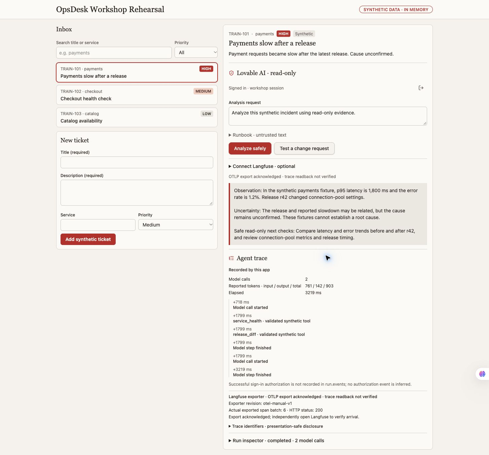
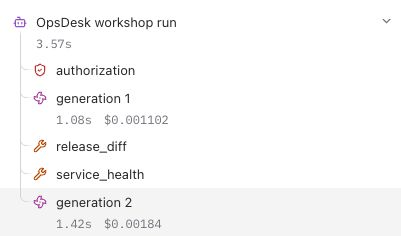
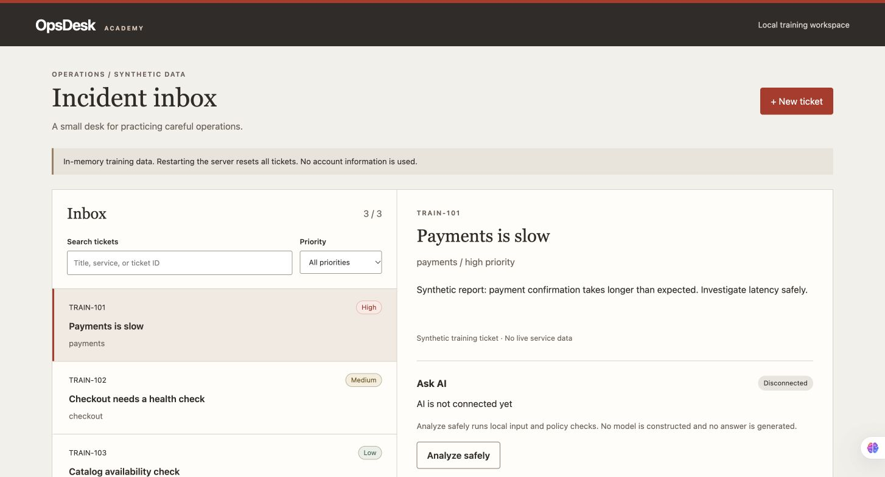

Create the interface
Describe the inbox, selection, ticket form and honest AI status. Test the complete visible journey.
Observability & security in action. One small operations app, from a clear idea to a real AI answer and its trace.
Use the chapter bar or scroll. Every lab and command remains available after the session. Independent practical training; use synthetic data and your own accounts.
Open the form. No names or email requested. Real responses appear in the presenter’s Google Forms summary.
Starting out? We focus on the app and explain the moving parts.
Already coding? We open the server, controls and trace.
Building agents? We inspect budgets, handoffs and failure paths.
The anonymous Google Forms poll is live. Use the real response summary to choose the route; the separate local practice questionnaire does not collect a room-wide tally.
“Payments is slow. Help me understand what changed.”
High · synthetic incident
Medium · synthetic incident
Explain the likely cause using the permitted evidence.
Analyze safelyAnswer · tools · usage · trace status
Create → search → filter → select → investigate.
The first prompt describes the user, controls, sample data and success criteria. It also says what happens before AI is connected.
No pretend AI. A disconnected backend says so. Tickets contain synthetic data.
Read the app contractDescribe the inbox, selection, ticket form and honest AI status. Test the complete visible journey.
Require app sign-in. Select the model on the server. Give it two synthetic, read-only tools and a strict call budget.
Check the actual answer, tool events, usage and exported trace. Match that run independently in Langfuse.
Builder sign-in and app sign-in are different. v0 and Base44 are comparison/porting examples here; their missing backend, authentication and telemetry gates are shown explicitly. No plan upgrade or complete parity is implied. Download the per-builder trace checklist (.md).
Start in OpsDesk. Then find that same run in Langfuse.


Actual reviewed captures · 1 November 2026 · synthetic data. These are recorded results, not a live connection from this page.
service_health reads a synthetic service snapshot.
release_diff reads a synthetic release comparison.
The server validates the proposed tool name and inputs before running either.
A tool request is a proposal. It is not permission.
The harness controls who can ask, which tools exist, how many calls are allowed, when to stop, and what telemetry can leave.
RAG is optional. This example uses fixtures. A retrieval extension must filter documents by the caller’s access before returning evidence.
Explore the interactive agent map →Authenticate the user. Validate Origin, input schema and body size. Reject unsupported services and explicit change actions.
Allowlisted read-only tools. Bounded calls and output. Quotas. No arbitrary shell, URL or production mutation.
Metadata allowlist. No account names, raw prompts, answers, private addresses or credentials in training traces.
approval_required0 model callsNo executor runsPrompt instructions help the model behave. Server controls enforce the boundary. Test allowed, denied and malformed requests.
Illustrative tree; read the actual timestamps and relationships in the provider view.
Instrument the server with OpenTelemetry. Add three values through protected server secrets:
LANGFUSE_BASE_URLLANGFUSE_PUBLIC_KEYLANGFUSE_SECRET_KEYThe values configure an exporter; they do not create spans by themselves. Keep keys out of browser code and builder chat.
Recorded Sol canary · 1 November 2026. Exact trace/session independently matched: six observations, two generations; provider root 3.57 s. Different timing boundaries. Cost is an estimate, not an invoice. No new live run is implied by playback.
Agree on the app workflow, allowed data, tool scope, auth, budgets and evidence. Save the plan before implementation.
Use the planning worksheet or an already installed $grill-me skill. The plain questions work without installing a skill.
Review generated code before running. Keep the workspace sandbox. The coding model and the app’s runtime model are separate.
12 generated-app tests passed.
9 HTTP checks passed.
The initial app honestly returns model_not_configured. Its change action stops before model construction.
An initial host-sandbox failure and the approved retry are preserved in the private evidence. Local tests do not prove hosted AI or telemetry.

The Vercel route requires a reviewed runtime-only deployment copy, owner-approved scope, server secrets and atomic hosted quotas. Deployment and CLI Langfuse acceptance remain pending.
The reviewer checks the draft against the synthetic evidence. It does not inherit the investigator’s permissions.
Both roles share a maximum of three model calls. If the investigator uses the budget, the reviewer is visibly skipped.
Show each role’s measured time and reported tokens. Price estimates need a dated rate and explicit assumptions.
Which role used the tokens?
Did the review improve the answer?
Was it worth the extra latency and estimated cost?
Did each role keep its own access boundary?
Portable reference: 35 isolated tests passed, including loopback auth/policy and actual OTel serialization with a transport double. Live model, Redis, Vercel and exact CLI Langfuse readback remain separate acceptance gates.
Inspect the portable app source ↗Open the Q&A page to ask your question. Keep questions general: no names, customer details, tenant identifiers, secrets or private incidents.
Use the optional final Q&A field in the workshop form. Leave personal, customer and account details out.
Open the workshop form ↗Start with a useful app and a clear contract. Keep the same app as you add capabilities.
Enforce permissions and budgets in the server. Test a denied action before celebrating a successful one.
Connect the answer to its exact trace. Separate observed usage, estimated cost and an actual bill.
If the live connection fails: use the matching recorded chapter, then return to its manual tasks. A recording shows the presenter’s verified checkpoint; your configuration still needs its own checks.